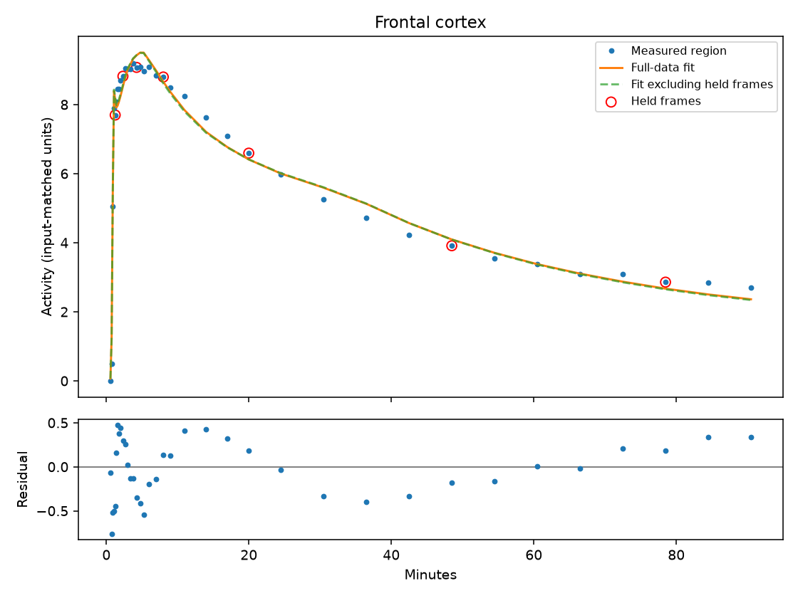
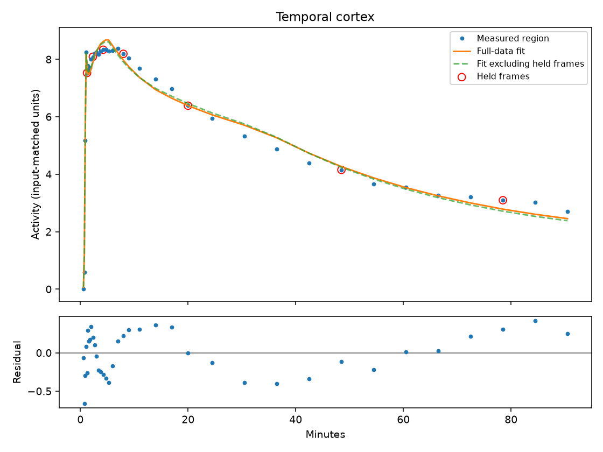
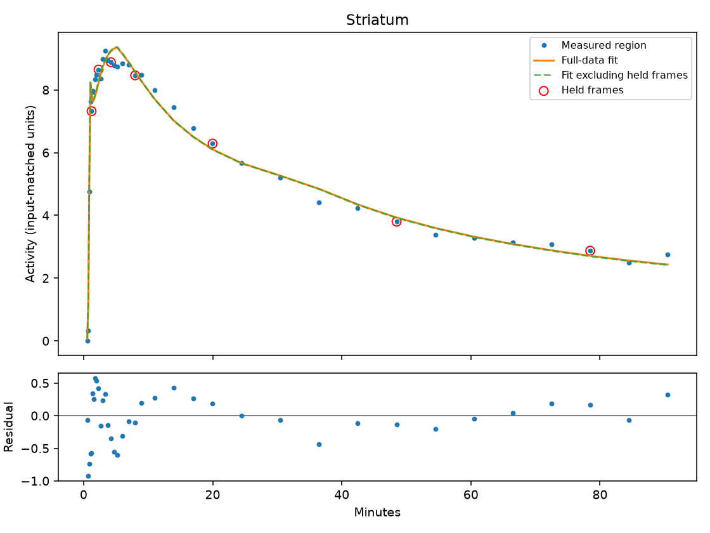
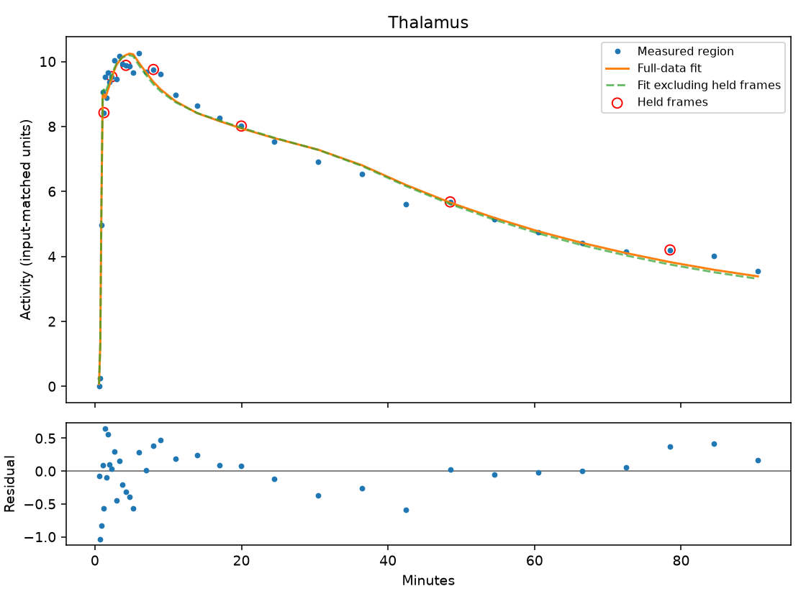
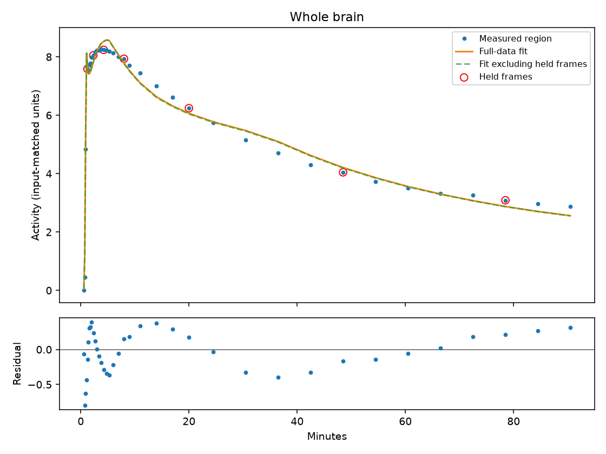
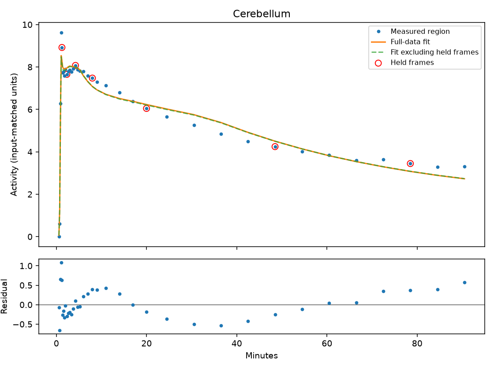

6/6 regions processed; 6 pass local checks.
Held-frame error measures prediction, not parameter accuracy. Raw estimates and flagged fits remain visible for review. Local checks do not establish biological validity.
Download results CSV · Complete results
| Region | Estimate | Raw estimate | Held-frame error | Quality checks |
|---|---|---|---|---|
| Frontal cortex | 2.2258 | 2.2258 | 4.2% | Local checks passed |
| Temporal cortex | 2.2583 | 2.2583 | 3.8% | Local checks passed |
| Striatum | 2.2307 | 2.2307 | 4.9% | Local checks passed |
| Thalamus | 3.0539 | 3.0539 | 4.8% | Local checks passed |
| Whole brain | 2.2853 | 2.2853 | 3.2% | Local checks passed |
| Cerebellum | 2.3947 | 2.3947 | 5.6% | Local checks passed |





